打开时间编辑器“片段”(Clip)上下文菜单
- 在时间编辑器中的动画片段上单击鼠标右键
时间编辑器上下文菜单选项
根据在其上单击鼠标右键的时间编辑器区域，将显示不同的上下文菜单及其相关选项：
- 在当前帧分割片段(Split Clip at Current Frame)
- 在播放光标所在的位置拆分动画。可以将一个片段拆分成许多片段，每个片段包含不同的动画分段。您可重用和重新排序这些分段。在时间编辑器中分割片段不会对源动画造成破坏。
-
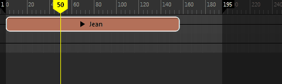
- 剪去前方/剪去后方(Trim Before/Trim After)


- 设置片段的输入点和输出点，以便只有原始源的一部分影响片段。请参见在时间编辑器中编辑动画中的修剪。
- 剪去前方(Trim Before)：
- 剪去后方(Trim After)：
- 将起点帧/终点缩放到当前帧(Scale Start/End to Current Frame)
-
注： 此选项不可用于音频片段。
-
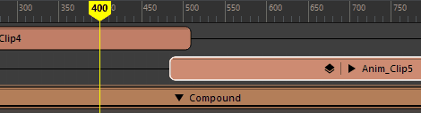
- 缩放片段使其更长或更短，加快或减慢其动画速度。此外，还可以通过从时间编辑器工具栏的“编辑”(Edit)菜单中选择“缩放”(Scale)并在片段结尾拖动，以交互方式缩放片段。
注： 缩放不同于修剪（更改源的输入值和输出值）。缩放片段时将缩放权重曲线以及片段，但修剪输入/输出点会独立于权重曲线裁剪片段。有关详细信息，请参见编辑时间编辑器片段中的“修剪片段”。
- 裁剪边缘编辑模式(Clip Edge Edit Mode)
- 激活以下节点，以交互方式执行下列操作。
-
- 修剪(Trim)
- 用于设置片段的输入和输出点，这样只有原始源的一部分影响片段。从“编辑模式”(Edit Mode)菜单中选择“修剪”(Trim)，然后将光标放到片段的左边或右边。请注意光标外观的变化。拖动光标即可修剪。
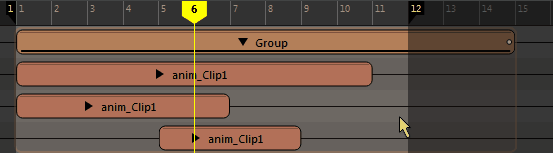
片段顶部的负数表示已修剪的帧数。
子片段上的白点表示它因父片段而修剪。如果子片段太小而无法显示，则不显示白点。
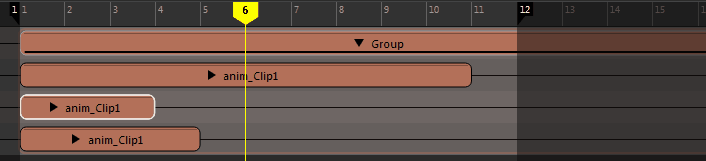已修剪片段上的黑点表示在片段之外有动画。
有关详细信息，请参见时间编辑器片段符号。
-
提示： “修剪”(Trim)模式是时间编辑器的默认“编辑”(Edit)模式。也可以在选择片段后按住 E 键来激活“修剪”(Trim)模式。
- 比例(Scale)
- 用于加快或减慢片段的动画速度。从“编辑模式”(Edit Mode)菜单中选择“缩放”(Scale)，然后将光标放到片段的左边或右边。请注意光标外观的变化。拖动光标即可缩放。

缩放百分比将显示在片段的顶部。
提示： 也可以在选择片段后按住 R 键来激活“缩放”(Scale)模式。注： 系统将在片段的修剪边或延伸边处显示一些特殊符号，用于说明内部所含动画的状态。有关详细信息，请参见时间编辑器片段符号。 -
循环(Loop)

- 用于多次按顺序重复片段的动画。从“编辑模式”(Edit Mode)菜单中选择“循环”(Loop)，将光标放到片段的左边或右边，然后拖动以进行循环。
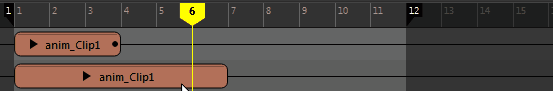
若要调整循环，请单击并拖动片段的已循环区域的边。显示的“之后的循环”(Loop After)值（上图中为 0.3）表示片段包含的循环数。如果循环片段的左侧，则它是“之前的循环”(Loop Before)值。 缩放、修剪或循环片段时，片段的虚拟边界将变为实际边界以执行所有编辑操作。
提示： 也可以在选择片段后按住 T 键来激活“循环”(Loop)模式。 - 通过“属性编辑器”(Attribute Editor)中的“之前的片段循环模式”(Clip Loop Before Mode)/“之后的片段循环模式”(Clip Loop After Mode)，您可以分别在片段的开始和结束处设置循环。您可在其中找到两类循环模式：“周期”(Cyclical)模式会重复动画本身，而“渐进”(Progressive)模式会在偏移的基础上重复动画，因此可用于创建循环行走。有关这两种循环方法的说明，请参见时间编辑器中的循环类型。
-
注： 应用“保持”(Hold)或“循环”(Looping)之后，片段无法分割。可以改为先将其变为组片段，然后再进行分割。
-
注： 若要使用具有循环片段的动画层，请从该片段创建组片段，然后将层添加到组。
- 请参见：
- 保持(Hold)
- 用于延伸片段的最后一个姿势帧，使其保持指定的一段时间。从“编辑模式”(Edit Mode)菜单中选择“保持”(Hold)，然后将光标放置到片段的左边或右边。请注意光标外观的变化。将光标拖动到所需的“保持”(Hold)长度。
-
 提示： 也可以在选择片段后按住 Y 键来激活“保持”(Hold)模式。
提示： 也可以在选择片段后按住 Y 键来激活“保持”(Hold)模式。 -
注： 应用“保持”(Hold)或“循环”(Looping)之后，片段无法分割。可以改为先将其变为组片段，然后再进行分割。
- 删除(Delete)
- 从时间编辑器中移除所选对象。
- 剪切(Cut)
- 从时间编辑器中移除当前选择，然后将其复制到要粘贴的剪贴板。
- 复制/粘贴(Copy/Paste)
- 复制/粘贴选定对象。
注： 此菜单中的“复制/粘贴”(Copy/Paste)选项特定于您在时间编辑器中执行的操作。如果当活动窗口不是时间编辑器（例如，“视口”(Viewport)）时撤消“复制/粘贴”(Copy/Paste)操作，则不会对时间编辑器有任何影响，反之亦然。
- 组(Group)
- 将选定片段组合成单个片段，您可以将其作为一个整体进行编辑。请参见创建组片段。
- 解组(Ungroup)
- 解组选定组片段并将组内的所有片段恢复到本地时间。
注： 如果包含组片段的轨迹没有其他片段，则轨迹也会被删除。注： 仅当选择组片段时，该选项才处于活动状态。
- 此操作的热键是 Ctrl+Shift+G。
- 选择受驱动对象(Select Driven Objects)
-
注： 此选项不可用于音频片段。
- 选择在特定片段/组片段内进行分组、受动画影响的所有元素。
- 这在使用 HumanIK 绑定时很有用，可确保已选择所有受影响的动画控制器，而不考虑应用于绑定的 HIK 设置关键帧模式（例如，“全身”(Full Body)和“身体部位”(Body Part)）。
- 有关使用 HumanIK 角色绑定的详细信息，请参见在时间编辑器中为 HumanIK 角色设置动画。
- 使动画源唯一(Make Animation Source Unique)
-
注： 仅当将时间编辑器动画源用于多个片段时，该选项才可用。
- 将选定片段的动画源设置为独立，使您能够编辑选定片段的动画，而不影响任何其他共享同一动画源的片段。
- 例如，如果复制粘贴一个片段，则它们之间将共享动画源，且复制动画曲线会降低性能。相反，此设置可以使时间编辑器仅复制所需的数据。
- 使用“使动画源唯一”(Make Animation Source Unique)创建独立片段的一个例外情况是：您将多个运动捕捉数据行为（例如，不同的空手道动作）存储在一个动画文件中。在这种情况下，请勿将动画源切割成多个片段。应改为使用时间编辑器菜单栏中的创建仅包含相关分段的唯一动画源；这将创建该动画源的单独迭代。
- 延伸父片段(Extend Parent)
- 调整组片段大小，使之包括其中所含片段的完整长度。请参见在时间编辑器中编辑动画中的编辑父片段部分。
-
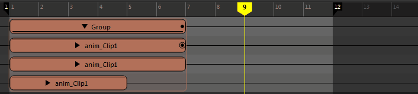
- 图形权重曲线(Graph Weight Curve)
-
注： 此选项不可用于音频片段。
- 在曲线图编辑器(Graph Editor)中打开动画片段以调整权重。当两个或多个片段在时间上重叠并驱动相同的元素时，可以通过设置用于控制片段相对影响的权重来将其混合在一起。有关使用曲线图编辑器更改片段动画的信息，请参见在曲线图编辑器中修改时间编辑器片段。
- 通过调整片段的权重，可以控制它相对于生成的动画中其他片段的影响程度。混合权重越高，片段对动画的影响就越大。混合组片段是在更高的级别融合动画的一种简单方法。有关片段权重的详细信息，请参见设置时间编辑器片段权重的关键帧。
- 禁用(Mute)
- 激活此选项可暂时禁用片段。该功能与名单中的“禁用”(Mute)按钮 相同。
- 重影(Ghost)
-
“时间编辑器”(Time Editor)重影是动画对象的简化表示形式，可用于在 crossfading、过渡和线性插值之前预览每个片段的影响。使用重影指导融合运动捕捉动画文件或通过匹配姿势预先可视化姿势匹配（请参见通过重新定位重新确定角色的方向）。
请参见通过时间编辑器重影预览动画。 -
- 启用(Enable)
- 仅显示选定片段的片段重影。
注： 激活此菜单中的“启用”(Enable)不同于激活名单中的轨迹“重影”(Ghost) 按钮。单击“启用”(Enable)仅显示选定片段的重影。这可以让您为轨迹上其他已生成重影的片段指定不同的重影颜色。
- 启用用户定义的重影(Enable user defined ghosts)
-
切换用户定义的重影的显示。请参见创建自定义片段重影。
- 设置/编辑用户定义的重影(Set/Edit User Defined Ghosts)
- 打开“用户定义的重影”(User Defined Ghosts)对话框，您可从中选择不同的场景元素将动画表示为重影。请参见创建自定义片段重影。
- 重置计时(Reset Timing)
- 将选定片段移回第一帧。
注： 如果选定片段位于轨迹上的片段序列中，则该片段将移动到其他片段顶部的第 1 帧，从而创建融合。
- 重命名片段...(Rename Clip...)
- 可用于为选定片段输入新名称。
- 融合模式(Blending Mode)
- 用于选择片段的融合模式。请参见使用相加模式组合动画。
-
- 法线(Normal)
- （默认）创建一个合并两个动画各个方面的统一片段。这将平均化两个片段中的操作，使融合片段上的运动比基础片段更精细。
- 相加(Additive)
- 相对于第一帧对片段进行解算，将其添加到动画，而不是将两个片段融合在一起。此效果会创建比“法线”(Normal)融合模式更独特的结果。请参见使用相加模式组合动画。
属性(Attributes)
- 添加/移除选定属性(Add/Remove Selected Attributes)
- 在片段中添加/移除选定的通道盒属性。
注： 使用此选项添加属性时，不会导入任何动画。“添加属性”(Add Attributes)仅捕捉当前值并将其添加到片段中。
层(Layers)
- 创建覆盖(Create Override)
- 为片段创建覆盖层。请参见将层片段添加到时间编辑器主题中的“层片段模式”。
- 创建相加(Create Additive)
- 为片段创建相加层。请参见将层片段添加到时间编辑器主题中的“层片段模式”。
- 创建过渡(Create Transition)
- 创建选定片段之间的桥接过渡。有关如何创建过渡的信息，请参见创建时间编辑器片段之间的过渡。
- 移除过渡(Remove Transition)
- 撤消在选定片段之间创建的任何过渡。有关如何创建过渡的信息，请参见创建时间编辑器片段之间的过渡。
- Crossfade
- 用于设置 crossfade 的样式。时间编辑器中的 crossfade 被视为动画曲线。如果片段已存在动画曲线，设置 crossfade 曲线时会将其覆盖。请参见“在时间编辑器中创建自定义 crossfade”。
注： 仅当涉及的两个片段共享一个或多个公用属性时，才有可能发生 crossfading。注： 默认（非自定义）曲线不会在场景中创建曲线；它们在片段内部实施。需要指定如何 crossfade 两个片段时，请改用“自定义”(Custom)选项。
- 从下列选项中选择：
-
- 线性(默认)(Linear (default))
- 两个片段之间的“线性”(Linear) crossfade 意味着左侧片段的值以线性方式淡出，而右侧片段的值以线性方式淡入。
- 如果表示为动画曲线，则线性 crossfade 看起来像一条对角线。
- 样条线(Spline)
- 两个片段之间的“样条线”(Spline) crossfade 将在这些片段之间创建更平滑的淡入和淡出效果。如果表示为动画曲线，则此 crossfade 看起来像一条两端弯曲的对角线。
- 阶跃(Stepped)
- 左侧片段的值在过渡中贯穿使用的 crossfade。
- 阶跃中间(Stepped Middle)
- 值从过渡中心的左侧片段跳转到右侧片段的 crossfade。
- 选择阶跃中间 crossfade 会产生突变过渡，这意味着在过渡的中间，左侧片段突然变为右侧片段的值。如果表示为动画曲线，则此 crossfade 看起来像一条突然下降的直线。
- 阶跃下一个(Stepped Next)
- 右侧片段的值在过渡中贯穿使用的 crossfade。
- 自定义(Custom)
- 激活“Crossfade”区域中的“自定义 Crossfade”(Custom Crossfade)选项，用于将 crossfade 作为动画曲线进行编辑。前两个选项分别是“线性”(Linear)和“样条线”(Spline)，可以为您提供使用“编辑自定义曲线”(Edit Custom Curve)选项进行修改可依据的起点。
- 从下列选项中选择：
- 自定义线性(Custom Linear)
- 将 crossfade 曲线创建为直线。请参见上文中对“线性”(Linear)的描述。
- 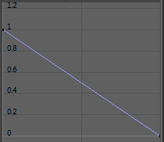
- 自定义样条线(Custom Spline)
- 创建平滑的 crossfade 曲线。曲线的切线共线（均位于相同的角度中），这样可确保 crossfade 曲线平滑地进入和退出。请参见上文中对“样条线”(Spline)的描述。
- 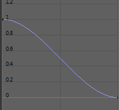
- 编辑自定义曲线(Edit Custom Curve)
- 打开曲线图编辑器(Graph Editor)，以便能够修改当前的 crossfade 曲线。
注： 这条新曲线将替换曲线图编辑器(Graph Editor)中先前存在的任何曲线。
- 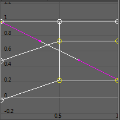
- 重定时(Retime)
- 重定时选项可用于改变片段的计时。时间扭曲不会更改片段的长度，但速度曲线会。有关这两类曲线的说明，请参见在时间编辑器中更改片段计时。
-
- 创建和编辑时间扭曲(Create and Edit Time Warp)
- 为选定的片段创建时间扭曲曲线。有关详细信息，请参见使用时间编辑器创建和编辑时间扭曲。
- 创建和编辑速度曲线(Create and Edit Speed Curve)
- 为选定的片段创建速度曲线。有关详细信息，请参见通过速度曲线改变片段速度。
- 已启用(Enabled)
- 显示“时间扭曲”(Time Warp)/“速度曲线”(Speed Curve)是否在片段上处于活动状态。
- 编辑(Edit)
- 在曲线图编辑器(Graph Editor)中打开曲线。
- 重置(Reset)
- 撤消对“时间扭曲”(Time Warp)/“速度曲线”(Speed Curve)所做的任何更改，并将其还原为默认状态。
- 删除(Delete)
- 删除“时间扭曲”(Time Warp)/“速度曲线”(Speed Curve)。
- 转换为时间扭曲(Convert to Time Warp)
- 将速度曲线更改为时间扭曲曲线。有关差异的说明，请参见在时间编辑器中更改片段计时。
- 重新定位(Relocate)
-
- 创建重定位器(Create Relocator)
-
创建一个可用于将动画角色移动到其他位置的标记。选择“重新定位 > 创建定位器”(Relocate > Create Locator) >
 以打开重定位器选项(Relocator Options)，在这个窗口中，您可从与片段关联的根列表中进行选择，以设置自定义重定位器。例如，如果您拥有基于控制器的角色，则需要在主体和脚控制器或主控制器（如果存在）上设置重定位器。简而言之，您需要在重定位器选项(Relocator Options)窗口中将用于操纵视口中整个角色的所有相同控制器设置为定位器。
以打开重定位器选项(Relocator Options)，在这个窗口中，您可从与片段关联的根列表中进行选择，以设置自定义重定位器。例如，如果您拥有基于控制器的角色，则需要在主体和脚控制器或主控制器（如果存在）上设置重定位器。简而言之，您需要在重定位器选项(Relocator Options)窗口中将用于操纵视口中整个角色的所有相同控制器设置为定位器。
请参见通过重新定位重新确定角色的方向。
- 编辑重定位器(Edit Relocator)
- 打开重定位器选项(Relocator Options)窗口，您可在其中为已创建的重定位器设置或更改自定义重定位器。
- 选择重定位器(Select Relocator)
- 为选定轨迹选择“重定位器”(Relocator)。
- 重置重定位器(Reset Relocator)
- 将角色还原为其在场景中的初始位置，但是保留“重定位器”(Relocator)标记，以便继续重新定位角色。
- 移除重定位器(Remove Relocator)
- 从场景中删除“重定位器”(Relocator)。
- 匹配重定位器...(Match Relocators...)
- 打开匹配选项(Matching Options)窗口。有关如何匹配动画片段的信息，请参见使用时间编辑器重定位器匹配姿势。
- 为名称空间重映射和创建新片段(Remap and create new clip for Namespace)
- 列出场景中可以将动画重映射到的名称空间。请参见按名称空间重映射动画。
- 烘焙(Bake)
-
- 烘焙到新片段/烘焙到新片段并删除(Bake to New Clip/Bake to New Clip and Delete)
-
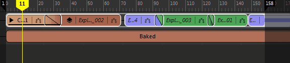
- 用于将选定的片段合并为单个片段，仅创建在已合并的片段中所需的最小数量的关键帧。删除原始动画（如果已指定）。
- 烘焙片段后，可以对其执行编辑操作，就好像它是单个片段一样。请参见在时间编辑器中编辑动画。
注： 可以将“烘焙到新片段”(Bake to new Clip)用于组片段或多个选定片段。
- 有关烘焙片段的详细信息，请参见烘焙时间编辑器片段。
- 烘焙到场景/烘焙到场景并删除(Bake to Scene/Bake to Scene and Delete)
- 将选定片段合并到场景中。删除原始动画（如果已指定）。
- 展平层(Flatten Layers)
-
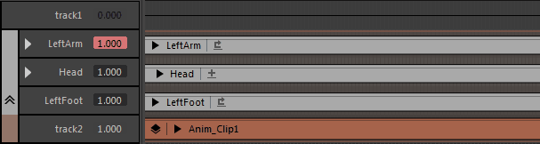
- 将选定片段的所有层合并为一个层。请参见将层片段添加到时间编辑器。
- 有关烘焙片段的详细信息，请参见烘焙时间编辑器片段。
- 导出选定对象...(Export Selected...)
- 打开“导出选定对象”(Export Selected) 以打开时间编辑器的“导出当前选择”(Export Selction)选项，可以在其中将选定片段另存为 Maya ASCII (.ma) 或二进制 (.mb) 文件，或者创建选定片段的缩略图或播放预览。有关导出片段的步骤，请参见导出时间编辑器片段。
- 将所有片段导出到 FBX...(Export All Clips to FBX...)
- 打开“将所有片段导出到 FBX 文件夹”(Export All Clips to FBX Folder)窗口，以便可以将场景中的所有片段另存为单独的 .fbx 文件，这些文件以其原始片段名称命名。
- 在“本地时间”选项卡中打开(Open in Local Time Tab)
-
注： 仅当在组片段上单击鼠标右键时，此选项才会显示在“片段”(Clip)上下文菜单中。
- 打开“本地时间”(Local Time)选项卡，使您能够在应用由组实施的计时运算符（即，原始计时）之前，先查看组片段中的内容。有关创建“本地时间”(Local Time)选项卡的信息，请参见为组片段创建选项卡；有关全局和局部计时的说明，请参见时间编辑器中的全局和局部计时。